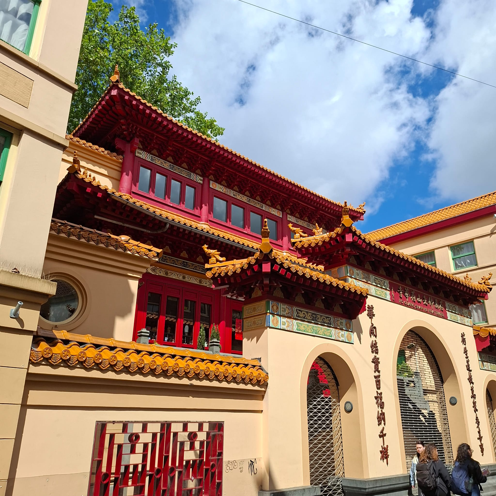
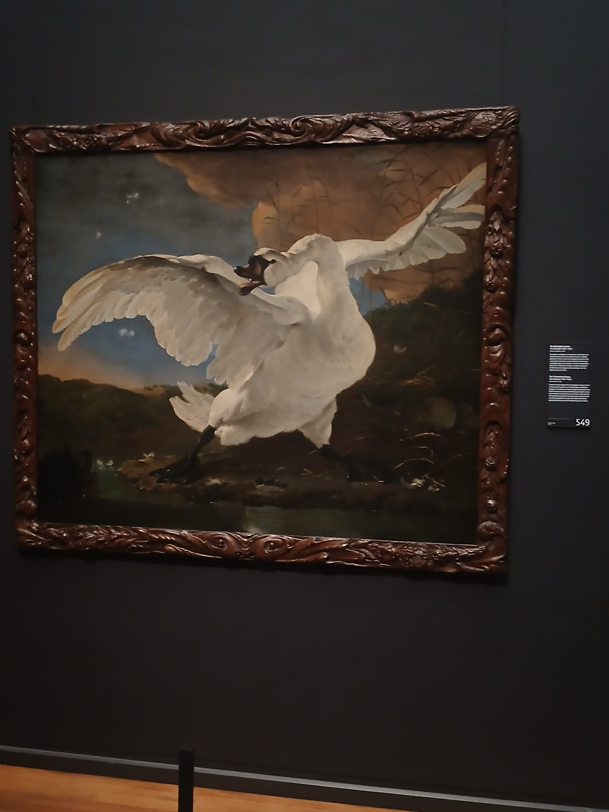

CKV REFLECTIE
Kunst • Cultuur • Reflectie • Groei


Kunst • Cultuur • Reflectie • Groei
Hier vind je een overzicht van mijn ervaringen, inzichten en groei gedurende het CKV-project.
Ik heb verschillende thema's behandeld, culturele activiteiten ondernomen en mijn eigen kunstvisie ontwikkeld.
Door middel van deze reflectie wil ik laten zien hoe mijn kijk op kunst en cultuur is veranderd en hoe ik ben gegroeid in mijn begrip en waardering ervan.